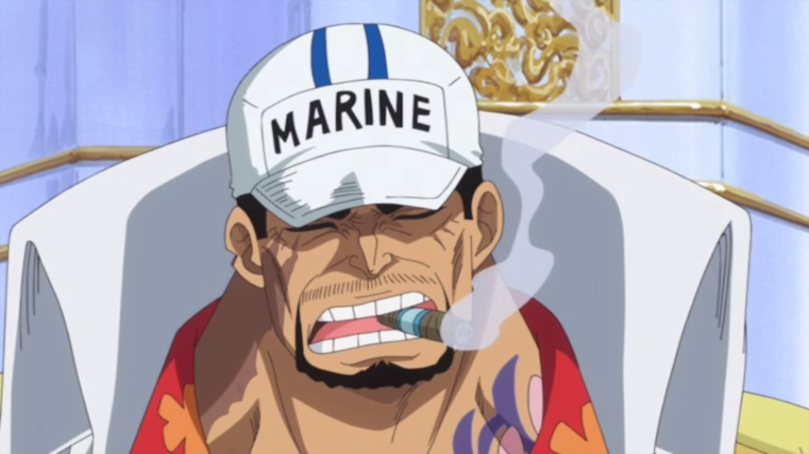
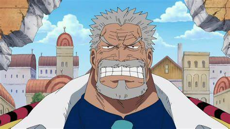
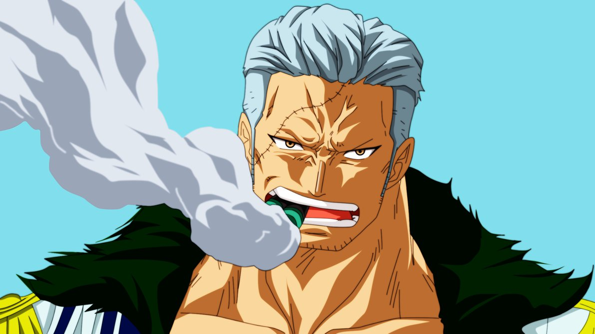
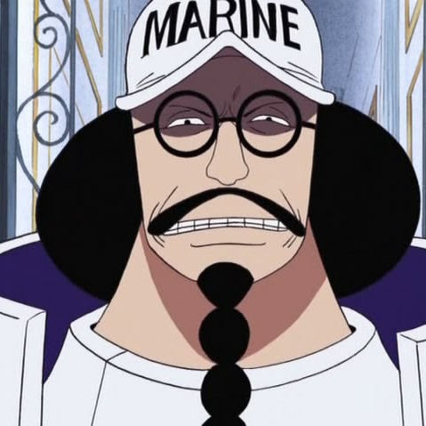
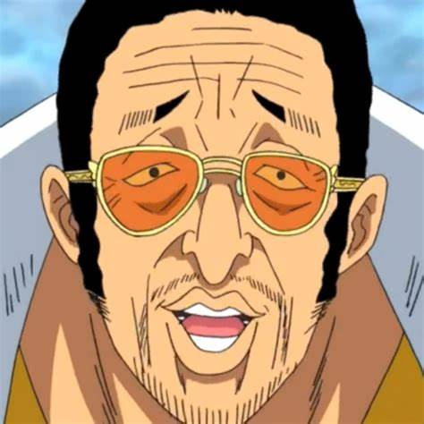
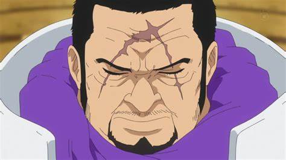
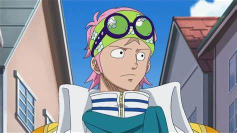
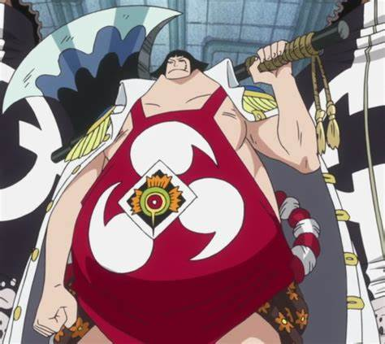

What is a marine?
The marines are one of the three strongest military powers in the One Piece verse, they answer directly to the World Government and operate in many of the countries on the planet. Their forces are well organized and well led that they fight in the name of justice.
Sakazuki
Sakazuki, formerly known by his admiral alias Akainu, is the current fleet admiral of the Marines, succeeding the previous fleet admiral, Sengoku. During the first half of the series, he was one of the three admirals, and the last one to be fully revealed. One of his first decisions was to relocate the Marine Headquarters into the New World in preparation for the New Pirate Age.
Garp
Monkey D. Garp is an extremely famous and powerful Marine vice admiral. He is the father of Monkey D. Dragon, the paternal grandfather of Monkey D. Luffy, and the adoptive grandfather of Portgas D. Ace. Garp is one of the major figures, aling with Kong, Sengoku, Shiki, Silvers Rayleigh and Whitebeard, from the times when the "Pirate King" was still alive.
Smoker
Smoker the White Hunter is a Marine officer and the Commander of the G-5 Marine Base, following the treason of his former superior Vergo. He was fisrst introduced as a captain in Loguetown, where he made it his mission to capture Luffy, and was later promoted to the rank of commodore, due to the events in Alabasta. At some point during the timeskip, he was promoted to the rank of vice admiral.
Sengoku
Sengoku the Buddha was also one of the major figures along Whitebeard, Shiki and Monkey D. Garp during the times when Gol D. Roger was still alive, and still continues to be in the present, even after his retirement from the Marines.
Borsalino
Borsalino, more commonly known by his alias Kizaru, is an admiral in the Marines. After Aokiji resigned from the Marines and Akainu was promoted to fleet admiral, Kizaru is now the only remaining admiral from the previous trio.
Issho
Issho, better knwon by his alias Fujitora, is an admiral in the Marines. He was conscripted through a World Military Draft during the two year timeskip, and was appointed to his rank to gill the two admiral vacancies caused by Aokiji's resignation and Akainu's promotion.
Koby
Koby is a Marine Captain who trained together with Helmeppo under Vice Admiral Garp's supervision. He is currently a member of the Marine special forces unit SWORD. He was formerly an involuntary pirate ship caretaker for the Alvida Pirates until he was liberated by Luffy and he was the first person Luffy befriended on his travels.
Sentomaru
Sentomaru is the bodyguard of Vegapunk and is in command of the Marine's Science Unit as its captian. He can be considered the secondary antagonist of the Return to Sabaody Arc.